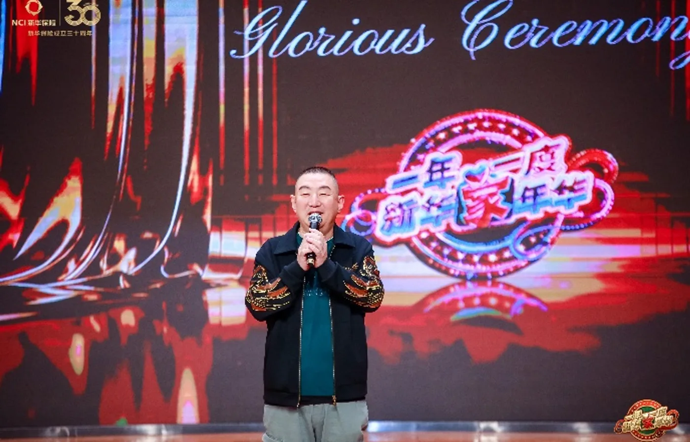
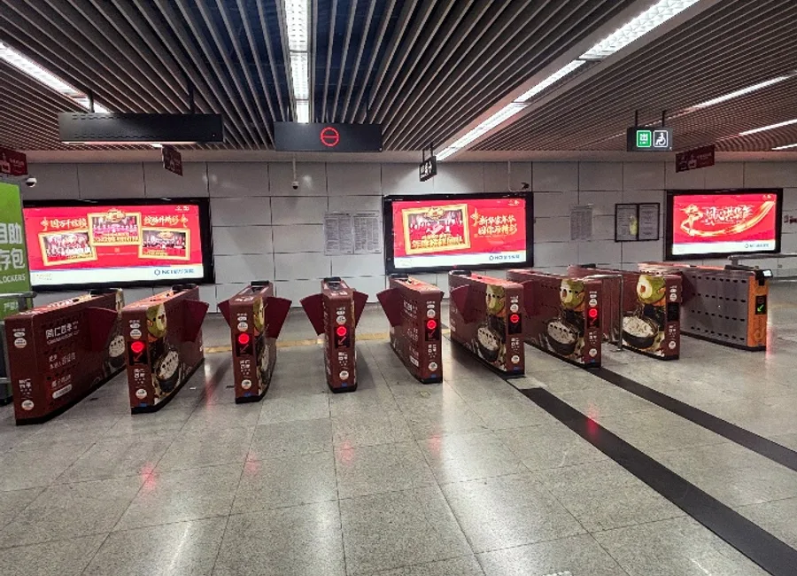
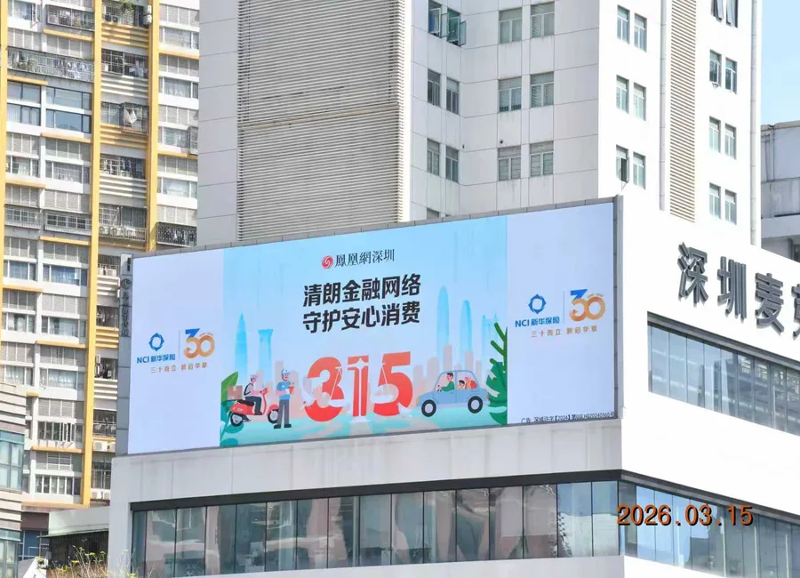

把节日事件做成连续、有节奏的品牌叙事。
以官方内容为主轴，串联报纸、地铁灯箱、视频与城市地标大屏；在3·15节点用高频原创与权威媒体强化可信度。
- 规划预热、现场、复盘的内容节奏
- 统筹纸媒、地铁与外部媒体资源
- 借媒体关系争取城市大屏公益露出
我的角色 传播策划 · 内容编排 · 媒体资源整合 · 节点执行
线上 / 线下 / 户外
以官方内容为主轴，串联报纸、地铁灯箱、视频与城市地标大屏；在3·15节点用高频原创与权威媒体强化可信度。


3·15 专项在 7 天内完成 12 篇官微内容、2 家外部媒体发布，并通过资源协同获得城市地标大屏免费投放。